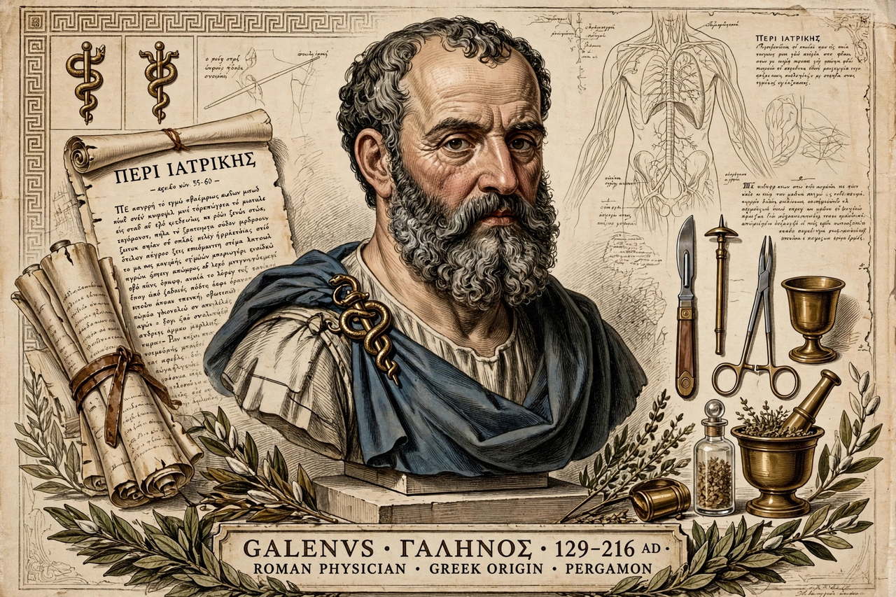

Aelius Galenus or Claudius Galenus (129 – c. 216 AD), often anglicized as Galen, was a Roman and Greek physician, surgeon and philosopher. Considered one of the most accomplished medical researchers of antiquity, Galen influenced the development of anatomy, physiology, pathology, pharmacology and neurology for more than a millennium.
Born in Pergamon (modern Bergama, Turkey), Galen studied in Greece and Alexandria, served as physician to gladiators, and became personal physician to emperors Marcus Aurelius and Commodus in Rome.
Building on Hippocrates' theory of the four humours, Galen performed animal dissections and vivisections, demonstrated that arteries carry blood, distinguished sensory and motor nerves, and described the brain and heart valves. He wrongly held that blood passed through pores in the heart's septum — a view only overturned in the early modern period.
Galen wrote hundreds of treatises; many survived through Greek, Syriac and Arabic transmission. His authority dominated medieval European and Islamic medicine until Vesalius and Harvey challenged parts of it in the 16th–17th centuries.